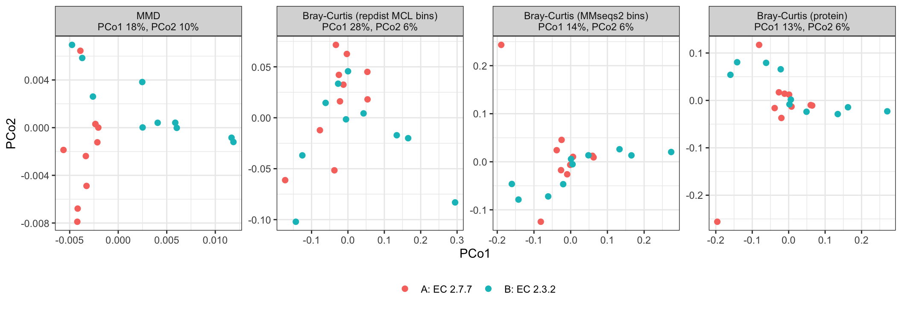
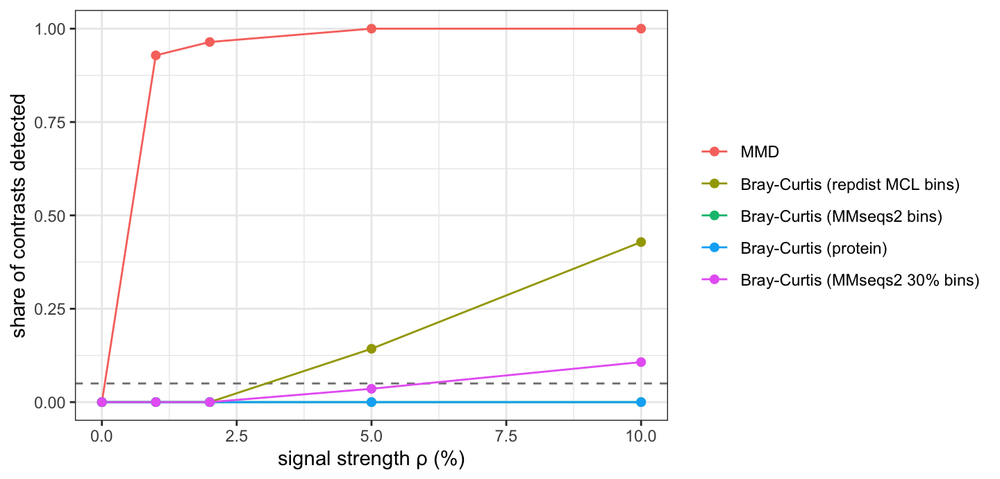

Two simulations with known truth answer different questions; the case study then applies repdist to real metaproteomes, where there is none.
| Simulation 1 | Simulation 2 | |
|---|---|---|
| Question | Can a sample distance detect a shared latent relationship among enriched proteins when no accession is shared? | Can it separate two functional states when every sample carries its state through different sequence clusters? |
| Proteins | CATH FunFam domains | Swiss-Prot enzymes, full length |
| Truth | FunFam membership | experimental EC3 |
| Groups | one FunFam (coherent) against a matched null | EC3-A against EC3-B, symmetric |
| Sequence clusters | QC: every enriched domain in its own 50% MMseqs2 cluster | the test: no 50% cluster enriched twice within a condition |
| Distances | MMD, Bray-Curtis on MCL bins and on proteins | the same, plus Bray-Curtis on MMseqs2 bins |
Simulation 1 is a controlled positive benchmark: FunFams are tight structural and functional families, so the hidden coherence is strong. Simulation 2 is harder and closer to metaproteomics: an EC3 class spans many sequence families and often several folds. Neither asks whether structure beats sequence. Both ask whether a representation-aware distance keeps the relationship between different proteins that protein identity, or hard sequence bins, discard.
library(repdist)
library(ggplot2)
library(vegan)Both simulations use twenty samples, two groups of ten, and the same negative-binomial model. Every protein of a universe is present at baseline in every sample; sample \(i\) has expected composition
\[ p_i = (1 - \rho)\,\pi + \rho\, q_i , \]
where \(\pi_j \propto \mathrm{LogNormal}(0, 1)\) is the common baseline and \(q_i\) spreads its mass evenly over sample \(i\)’s enriched proteins. The signal strength \(\rho\) is the expected share of abundance on the enriched proteins: a defined mass, not a fold change. Counts have mean \(\mu_{ij} = s_i D p_{ij}\) with depth \(D = 2 \times 10^4\) and size factor \(s_i \sim \mathrm{LogNormal}(0, 0.25)\), and variance \(\mu + \phi\mu^2\), with a DESeq2-like dispersion trend at each count’s own mean, \(\phi_{ij} = (0.1 + 1/\mu_{ij})\, e_j\), \(e_j \sim \mathrm{LogNormal}(0, 0.5)\). The \(k\)-th enriched protein of the second group takes the baseline abundance of the \(k\)-th of the first, so the groups also match on the baseline of the proteins that carry the signal.
The representative signal strength is \(\rho\) = 2%, fixed before any result: in the source study of the case study, glycoside hydrolases rose from under 1% to over 2.5% of the metaproteome on the yeast diet (Blakeley-Ruiz et al. 2025).
depth <- 2e4
rho_example <- 0.02
nb_counts <- function(up, ids, rho, pairs) {
n <- length(up)
pi <- setNames(rlnorm(length(ids)), ids)
pi[pairs[, 2]] <- pi[pairs[, 1]] # matched baseline of enriched proteins
pi <- pi / sum(pi)
s <- rlnorm(n, 0, 0.25)
e <- rlnorm(length(ids), 0, 0.5)
p <- matrix((1 - rho) * pi, n, length(ids), byrow = TRUE,
dimnames = list(names(up), ids))
for (j in seq_len(n)) {
p[j, up[[j]]] <- p[j, up[[j]]] + rho / length(up[[j]])
}
mu <- s * depth * p
phi <- (0.1 + 1 / mu) * rep(e, each = n)
matrix(rnbinom(length(mu), mu = mu, size = 1 / phi), n,
dimnames = dimnames(p))
}sample_mmd(), the maximum mean
discrepancy between samples under a Gaussian kernel on the protein
embeddings (see the Reference).protein_similarity() → bin_proteins() →
bin_glom(), then Bray-Curtis on the bin counts. The bins
depend only on the universe, so they are built once per universe, with
package defaults (predicted TM-score ≥ 0.7, coverage ≥ 0.5, inflation
2).PERMANOVA (Anderson 2001) tests
whether the groups differ in their distance-based centroids; PERMDISP
(Anderson
2006) tests whether they differ in spread (mean distance to
the centroid). Both use 999 permutations in vegan (Oksanen et al. 2025); a test detects at
p ≤ 0.05.
group_tests <- function(D, group) {
set.seed(1)
a <- adonis2(D ~ group, data = data.frame(group = group),
permutations = 999)
bd <- betadisper(D, group)
set.seed(1)
pd <- permutest(bd, permutations = 999)
disp <- tapply(bd$distances, group, mean)
c(R2 = a$R2[1], F = a$F[1], p = a$`Pr(>F)`[1],
setNames(disp, paste("dispersion", names(disp))),
PERMDISP_p = pd$tab[1, "Pr(>F)"])
}
test_all <- function(D, group) {
t(vapply(D, group_tests, numeric(6), group = group))
}Question. Can representation-aware analysis recover a condition-level functional difference when the proteins carrying each function belong to different sequence clusters in every sample?
Two coherent functional states are compared symmetrically: condition A is enriched for one EC3, condition B for another, and within a condition no MMseqs2 sequence cluster is enriched in two samples.
u <- readRDS(file.path("curated", "simulation_universe.rds"))
mm <- readRDS(file.path("curated", "simulation_mmseqs2.rds"))
# the sequence clusters were computed on this exact universe file
stopifnot(identical(mm$provenance$universe_md5,
unname(tools::md5sum(file.path("curated", "simulation_universe.rds")))))
x <- u$proteins
ann <- u$annotation
stopifnot(identical(ann$protein, names(x)),
identical(mm$clusters$protein, names(x)))
ann$mmseqs50 <- mm$clusters$mmseqs50
ann$mmseqs30 <- mm$clusters$mmseqs30
c(proteins = length(x), EC3 = length(unique(ann$ec3)),
EC4 = length(unique(ann$ec4)))
#> proteins EC3 EC4
#> 4920 229 2679
u$provenance$steps
#> candidates single_complete_ec4 length_50_1000
#> 18779 5903 5794
#> no_U_or_O uniref50_representatives
#> 5786 4920The proteins are UniProtKB/Swiss-Prot entries (The UniProt Consortium
2025) (release 2026_03) from Bacteria and Archaea,
non-fragments, with an experimentally supported catalytic activity. An
entry is kept only if every EC number it carries, on any reaction or in
its name, is one complete four-level number (EC4) and at least one
reaction with that number has experimental evidence (ECO:0000269).
Full-length sequences of 50 to 1000 residues (the TM-Vec head’s training
range) without selenocysteine or pyrrolysine are kept, one protein per
UniRef50 cluster (Suzek et al.
2015), and embedded with
embed_proteins(model = "tmvec")
(data-raw/simulation_universe.R).
data-raw/simulation_mmseqs2.R clusters the same
sequences with MMseqs2 18.8cc5c. The primary clustering uses 50%
identity, the usual protein-family level (as UniRef50); 30% identity is
a permissive sensitivity analysis. Both require the alignment to cover
80% of both sequences (--cov-mode 0) and use the most
sensitive prefilter (-s 7.5):
mm$provenance[c("cluster_50", "cluster_30")]
#> $cluster_50
#> [1] "mmseqs easy-cluster <tmp>/universe.fasta <tmp>/c0.5 <tmp>/work --min-seq-id 0.5 -c 0.8 --cov-mode 0 --cluster-mode 0 -s 7.5"
#>
#> $cluster_30
#> [1] "mmseqs easy-cluster <tmp>/universe.fasta <tmp>/c0.3 <tmp>/work --min-seq-id 0.3 -c 0.8 --cov-mode 0 --cluster-mode 0 -s 7.5"
mm$provenance$n_clusters
#> mmseqs50 mmseqs30
#> 4454 2945
# every 50% cluster lies inside one 30% cluster
all(tapply(ann$mmseqs30, ann$mmseqs50, function(v) length(unique(v))) == 1)
#> [1] TRUEBecause the universe is already one protein per UniRef50 cluster, the 50% clustering is close to the proteins themselves.
Each sample is enriched in two proteins of its condition’s EC3, and every enriched protein of a condition comes from a different 50% cluster. An EC3 is eligible if it spans at least 10 × 2 = 20 distinct 50% clusters. Eligibility uses only the EC labels and the MMseqs2 clusters, never the embeddings, the MCL bins or any result. The eligible EC3s are shuffled with a fixed seed and paired in order, so each EC3 enters exactly one contrast.
n_per_group <- 10L
n_enriched <- 2L
k <- n_per_group * n_enriched
clusters_per <- function(level) {
tapply(ann$mmseqs50, ann[[level]], function(v) length(unique(v)))
}
n50 <- clusters_per("ec3")
eligible <- sort(names(n50)[n50 >= k])
c(EC3 = length(n50), eligible = length(eligible),
`eligible EC4` = sum(clusters_per("ec4") >= k))
#> EC3 eligible eligible EC4
#> 229 56 5
set.seed(20261008)
shuffled <- sample(eligible)
contrasts <- data.frame(A = shuffled[c(TRUE, FALSE)],
B = shuffled[c(FALSE, TRUE)])
nrow(contrasts)
#> [1] 28Only 5 EC4 classes meet the same rule, too few for an EC4 simulation, so EC4 is used to score the bins below.
For contrast \(c\) (seed \(c\)), condition A draws 20 distinct 50% clusters of EC3-A and one protein from each, two per sample. To keep the enrichment from collapsing into one enzyme, clusters are taken one per EC4 of the class before a second from any EC4, in random order. Condition B does the same in EC3-B, excluding any cluster A used. The conditions match on everything in the count model; only the class carrying the signal differs.
\(\rho\) takes the values 0, 1%, 2%, 5% and 10%; at \(\rho = 0\) both conditions have the same distribution, so detections are false positives. A contrast uses the same seed at every \(\rho\), so its enriched proteins, baseline, size factors and dispersions do not change with the signal strength.
rhos <- c(0, 0.01, 0.02, 0.05, 0.10)
mm50 <- setNames(ann$mmseqs50, ann$protein)
mm30 <- setNames(ann$mmseqs30, ann$protein)
draw_enriched <- function(ec, exclude = character()) {
cand <- unique(ann[ann$ec3 == ec & !ann$mmseqs50 %in% exclude,
c("mmseqs50", "ec4")])
cand <- cand[sample.int(nrow(cand)), ]
cand <- cand[!duplicated(cand$mmseqs50), ]
# one cluster per EC4 before a second from any EC4
cand <- cand[order(ave(seq_len(nrow(cand)), cand$ec4, FUN = seq_along)), ]
vapply(seq_len(k), function(r) {
p <- ann$protein[ann$mmseqs50 == cand$mmseqs50[r] &
ann$ec4 == cand$ec4[r]]
p[sample.int(length(p), 1L)]
}, "")
}
enriched <- function(i) {
set.seed(i)
a <- draw_enriched(contrasts$A[i])
b <- draw_enriched(contrasts$B[i], exclude = mm50[a])
up <- unname(split(c(a, b), rep(seq_len(2 * n_per_group),
each = n_enriched)))
names(up) <- sprintf("s%02d", seq_along(up))
list(up = up, pairs = cbind(a, b),
group = factor(rep(c("A", "B"), each = n_per_group)))
}
simulate_ec <- function(i, rho) {
d <- enriched(i) # sets the seed; the counts continue the same stream
d$counts <- nb_counts(d$up, ann$protein, rho, d$pairs)
d
}S <- protein_similarity(x, n_cores = BiocParallel::multicoreWorkers())
bins <- bin_proteins(S)
glom <- function(counts, cluster) t(rowsum(t(counts), cluster[colnames(counts)]))
distances_ec <- function(counts) {
list(
MMD = sample_mmd(counts, x),
`Bray-Curtis (repdist MCL bins)` = vegdist(bin_glom(counts, bins),
"bray"),
`Bray-Curtis (MMseqs2 bins)` = vegdist(glom(counts, mm50), "bray"),
`Bray-Curtis (protein)` = vegdist(counts, "bray"),
`Bray-Curtis (MMseqs2 30% bins)` = vegdist(glom(counts, mm30), "bray")
)
}The fifth distance, MMseqs2 bins at 30% identity, is the sensitivity analysis; it is reported in the tables but not in the ordination.
The first contrast of the seeded pairing, at \(\rho\) = 2%; both were fixed before any result.
sim <- simulate_ec(1, rho_example)
unlist(contrasts[1, ])
#> A B
#> "2.7.7" "2.3.2"
enr <- data.frame(sample = rep(names(sim$up), lengths(sim$up)),
condition = rep(sim$group, lengths(sim$up)), protein = unlist(sim$up))
enr <- cbind(enr, ann[match(enr$protein, ann$protein),
c("ec4", "name", "mmseqs50", "mmseqs30")])
enr$mcl_bin <- bins$membership[enr$protein]
write.csv(enr, file.path("supplement", "simulation2_example_enriched.csv"),
row.names = FALSE)
# no 50% cluster is enriched twice within a condition
stopifnot(!anyDuplicated(enr$mmseqs50[enr$condition == "A"]),
!anyDuplicated(enr$mmseqs50[enr$condition == "B"]))
# distinct labels among each condition's 20 enriched proteins
t(sapply(split(enr, enr$condition), function(d) c(
`50% clusters` = length(unique(d$mmseqs50)),
`30% clusters` = length(unique(d$mmseqs30)),
`MCL bins` = length(unique(d$mcl_bin)), EC4 = length(unique(d$ec4)))))
#> 50% clusters 30% clusters MCL bins EC4
#> A 20 20 17 20
#> B 20 17 12 16
# realised share of each sample's counts on its enriched proteins
tapply(vapply(seq_along(sim$up), function(i) {
sum(sim$counts[i, sim$up[[i]]]) / sum(sim$counts[i, ])
}, numeric(1)), sim$group, median)
#> A B
#> 0.02200388 0.02131370
D <- distances_ec(sim$counts)
res <- test_all(D, sim$group)
knitr::kable(res, digits = 3)| R2 | F | p | dispersion A | dispersion B | PERMDISP_p | |
|---|---|---|---|---|---|---|
| MMD | 0.115 | 2.328 | 0.001 | 0.012 | 0.011 | 0.704 |
| Bray-Curtis (repdist MCL bins) | 0.061 | 1.170 | 0.207 | 0.179 | 0.200 | 0.220 |
| Bray-Curtis (MMseqs2 bins) | 0.054 | 1.037 | 0.263 | 0.271 | 0.280 | 0.487 |
| Bray-Curtis (protein) | 0.055 | 1.052 | 0.222 | 0.283 | 0.289 | 0.549 |
| Bray-Curtis (MMseqs2 30% bins) | 0.057 | 1.085 | 0.220 | 0.229 | 0.242 | 0.314 |
Each sample’s enriched proteins: supplement/simulation2_example_enriched.csv.

For every contrast and condition, the 180 pairs of enriched proteins
from different samples are checked against the two clusterings, the MCL
bins, the EC4 labels and an all-vs-all MMseqs2 search
(-s 7.5, E-value ≤ 10-3; a pair without a hit
has no detectable sequence similarity). This depends only on the design,
not on \(\rho\) or any test.
hit_key <- paste(mm$hits$p1, mm$hits$p2)
cross_pairs <- function(sets) {
s <- rep(seq_along(sets), lengths(sets))
p <- unlist(sets)
ij <- which(outer(s, s, "<"), arr.ind = TRUE)
data.frame(a = p[ij[, 1]], b = p[ij[, 2]])
}
ec4 <- setNames(ann$ec4, ann$protein)
divergence <- do.call(rbind, lapply(seq_len(nrow(contrasts)), function(i) {
d <- enriched(i)
do.call(rbind, lapply(c("A", "B"), function(g) {
pr <- cross_pairs(d$up[d$group == g])
h <- mm$hits$fident[match(paste(pmin(pr$a, pr$b), pmax(pr$a, pr$b)),
hit_key)]
data.frame(contrast = i, condition = g, EC3 = contrasts[i, g],
`same 50% cluster` = mean(mm50[pr$a] == mm50[pr$b]),
`same 30% cluster` = mean(mm30[pr$a] == mm30[pr$b]),
`sequence hit` = mean(!is.na(h)),
`max identity` = if (all(is.na(h))) NA else max(h, na.rm = TRUE),
`same MCL bin` = mean(bins$membership[pr$a] ==
bins$membership[pr$b]),
`same EC4` = mean(ec4[pr$a] == ec4[pr$b]),
`distinct EC4` = length(unique(ec4[unlist(d$up[d$group == g])])),
check.names = FALSE)
}))
}))
stopifnot(all(divergence$`same 50% cluster` == 0))
knitr::kable(t(vapply(divergence[-(1:3)], function(v) {
quantile(v, c(0, 0.5, 1), na.rm = TRUE)
}, numeric(3))), digits = 3)| 0% | 50% | 100% | |
|---|---|---|---|
| same 50% cluster | 0.000 | 0.000 | 0.000 |
| same 30% cluster | 0.000 | 0.019 | 0.194 |
| sequence hit | 0.000 | 0.056 | 0.578 |
| max identity | 0.261 | 0.413 | 0.671 |
| same MCL bin | 0.000 | 0.053 | 0.628 |
| same EC4 | 0.000 | 0.000 | 1.000 |
| distinct EC4 | 1.000 | 20.000 | 20.000 |
Rows give, per condition, the share of cross-sample pairs in one 50% cluster, in one 30% cluster, with a detectable sequence hit, in one MCL bin and with one EC4; the highest identity of any hit pair; and the number of distinct EC4s among the 20 enriched proteins. Columns are the minimum, median and maximum over the 56 conditions.
bench2 <- do.call(rbind, lapply(seq_len(nrow(contrasts)), function(i) {
do.call(rbind, lapply(rhos, function(rho) {
s <- simulate_ec(i, rho)
r <- test_all(distances_ec(s$counts), s$group)
data.frame(contrast = i, A = contrasts$A[i], B = contrasts$B[i],
rho = rho, method = rownames(r), R2 = r[, "R2"], p = r[, "p"],
PERMDISP_p = r[, "PERMDISP_p"], row.names = NULL)
}))
}))
bench2$method <- factor(bench2$method, names(D))
# the representative contrast is the benchmark's contrast 1 at rho = 2%
stopifnot(isTRUE(all.equal(unname(res[, "p"]),
bench2$p[bench2$contrast == 1 & bench2$rho == rho_example])))
write.csv(bench2, file.path("supplement", "simulation2_contrasts.csv"),
row.names = FALSE)Contrasts detected by PERMANOVA, out of 28, with the number also significant by PERMDISP in parentheses. At \(\rho = 0\) these are false positives; about 1.4 are expected at α = 0.05.
| ρ = 0% | ρ = 1% | ρ = 2% | ρ = 5% | ρ = 10% | |
|---|---|---|---|---|---|
| MMD | 0 (1) | 26 (4) | 27 (2) | 28 (6) | 28 (3) |
| Bray-Curtis (repdist MCL bins) | 0 (1) | 0 (1) | 0 (1) | 4 (1) | 12 (2) |
| Bray-Curtis (MMseqs2 bins) | 0 (0) | 0 (1) | 0 (1) | 0 (0) | 0 (1) |
| Bray-Curtis (protein) | 0 (0) | 0 (1) | 0 (1) | 0 (0) | 0 (1) |
| Bray-Curtis (MMseqs2 30% bins) | 0 (0) | 0 (1) | 0 (2) | 1 (1) | 3 (1) |
MMseqs2 50% bins and proteins coincide at zero in the plot.

Median PERMANOVA \(R^2\) over contrasts. \(R^2\) is not on a common scale across distances: Bray-Curtis on many sparse features has a higher floor at \(\rho = 0\).
| ρ = 0% | ρ = 1% | ρ = 2% | ρ = 5% | ρ = 10% | |
|---|---|---|---|---|---|
| MMD | 0.050 | 0.088 | 0.133 | 0.173 | 0.194 |
| Bray-Curtis (repdist MCL bins) | 0.045 | 0.049 | 0.055 | 0.068 | 0.077 |
| Bray-Curtis (MMseqs2 bins) | 0.050 | 0.051 | 0.051 | 0.050 | 0.050 |
| Bray-Curtis (protein) | 0.050 | 0.050 | 0.051 | 0.051 | 0.051 |
| Bray-Curtis (MMseqs2 30% bins) | 0.048 | 0.049 | 0.052 | 0.056 | 0.059 |
Per signal strength, the number of contrasts that one distance detects and the other does not:
| ρ = 1% | ρ = 2% | ρ = 5% | ρ = 10% | |
|---|---|---|---|---|
| MMD, not MMseqs2 bins | 26 | 27 | 28 | 28 |
| MMseqs2 bins, not MMD | 0 | 0 | 0 | 0 |
| MCL bins, not MMseqs2 bins | 0 | 0 | 4 | 12 |
| MMseqs2 bins, not MCL bins | 0 | 0 | 0 | 0 |
| MMseqs2 30% bins, not MCL bins | 0 | 0 | 0 | 0 |
Every contrast, signal strength and distance, with R2, p and PERMDISP
p: supplement/simulation2_contrasts.csv.
This benchmark is separate from the sample-level simulations. The MCL bins of Simulation 2’s universe were built from embeddings and alignments alone; EC labels are used only here. The two MMseqs2 clusterings are scored the same way for comparison. With \(n_k\) members of label \(k\) in a group of size \(n\):
Purity and precision ignore singletons, so many small, pure groups score high on both while splitting each class across groups; recall measures that splitting. Each score is also given with the labels shuffled across proteins and the groups held fixed (mean of 100 shuffles).
groupings <- list(`repdist MCL bins` = bins$membership,
`MMseqs2 50%` = mm50, `MMseqs2 30%` = mm30)
knitr::kable(t(vapply(groupings, function(m) {
sizes <- as.vector(table(m))
c(groups = length(sizes), `multi-member` = sum(sizes > 1),
`singleton proteins (%)` = 100 * sum(sizes == 1) / length(m),
table(cut(sizes, c(0, 1, 2, 5, 10, 50, Inf),
labels = c("1", "2", "3-5", "6-10", "11-50", ">50"))),
largest = max(sizes))
}, numeric(10))), digits = 1)| groups | multi-member | singleton proteins (%) | 1 | 2 | 3-5 | 6-10 | 11-50 | >50 | largest | |
|---|---|---|---|---|---|---|---|---|---|---|
| repdist MCL bins | 1662 | 842 | 16.7 | 820 | 342 | 305 | 120 | 74 | 1 | 59 |
| MMseqs2 50% | 4454 | 359 | 83.2 | 4095 | 290 | 66 | 3 | 0 | 0 | 8 |
| MMseqs2 30% | 2945 | 941 | 40.7 | 2004 | 523 | 343 | 59 | 16 | 0 | 39 |
Columns 1 to >50 count groups by
size.
labels <- list(EC3 = setNames(ann$ec3, ann$protein), EC4 = ec4)
scores <- function(m, lab) {
lab <- lab[names(m)]
nk <- table(paste(m, lab, sep = "\r"))
group_of <- sub("\r.*", "", names(nk))
n <- table(m)
multi <- names(n)[n > 1]
top <- tapply(as.vector(nk), group_of, max)
same <- sum(choose(nk, 2))
precision <- same / sum(choose(n, 2))
recall <- same / sum(choose(table(lab), 2))
c(purity = mean(top[multi] / n[multi]), precision = precision,
recall = recall, F1 = 2 * precision * recall / (precision + recall))
}
set.seed(1)
ec_scores <- do.call(rbind, lapply(names(labels), function(level) {
do.call(rbind, lapply(names(groupings), function(g) {
m <- groupings[[g]]
obs <- scores(m, labels[[level]])
shuf <- rowMeans(replicate(100, scores(m,
setNames(sample(labels[[level]]), names(labels[[level]])))))
data.frame(level = level, grouping = g, t(obs),
`purity, shuffled` = shuf[["purity"]],
`precision, shuffled` = shuf[["precision"]],
`recall, shuffled` = shuf[["recall"]], check.names = FALSE)
}))
}))
knitr::kable(ec_scores, digits = 3, row.names = FALSE)| level | grouping | purity | precision | recall | F1 | purity, shuffled | precision, shuffled | recall, shuffled |
|---|---|---|---|---|---|---|---|---|
| EC3 | repdist MCL bins | 0.903 | 0.690 | 0.069 | 0.125 | 0.356 | 0.018 | 0.002 |
| EC3 | MMseqs2 50% | 0.983 | 0.966 | 0.003 | 0.006 | 0.473 | 0.018 | 0.000 |
| EC3 | MMseqs2 30% | 0.948 | 0.868 | 0.022 | 0.044 | 0.412 | 0.017 | 0.000 |
| EC4 | repdist MCL bins | 0.695 | 0.161 | 0.441 | 0.236 | 0.333 | 0.001 | 0.002 |
| EC4 | MMseqs2 50% | 0.921 | 0.852 | 0.071 | 0.131 | 0.462 | 0.000 | 0.000 |
| EC4 | MMseqs2 30% | 0.780 | 0.390 | 0.278 | 0.325 | 0.395 | 0.001 | 0.000 |
Both simulations are built in the regime the method is meant for: related proteins spread over sequence clusters that do not overlap by construction. There, a distance on graded representation similarity keeps relationships between different proteins that protein identity and hard sequence bins discard, and hard representation bins keep part of them. This does not show that structure beats sequence in general. The case study goes one step further, to a real metaproteomic contrast with no known functional truth.
supplement/simulation1_funfams.csv:
Simulation 1, every target FunFam and distance.supplement/simulation2_contrasts.csv:
Simulation 2, every contrast, signal strength and distance.supplement/simulation2_example_enriched.csv:
the representative contrast’s enriched proteins, with their EC4, MMseqs2
clusters and MCL bin.sessionInfo()
#> R version 4.5.2 (2025-10-31)
#> Platform: aarch64-apple-darwin20
#> Running under: macOS 27.0.1
#>
#> Matrix products: default
#> BLAS: /System/Library/Frameworks/Accelerate.framework/Versions/A/Frameworks/vecLib.framework/Versions/A/libBLAS.dylib
#> LAPACK: /Library/Frameworks/R.framework/Versions/4.5-arm64/Resources/lib/libRlapack.dylib; LAPACK version 3.12.1
#>
#> locale:
#> [1] en_US/en_US/en_US/C/en_US/en_US
#>
#> time zone: America/New_York
#> tzcode source: internal
#>
#> attached base packages:
#> [1] stats graphics grDevices utils datasets methods base
#>
#> other attached packages:
#> [1] vegan_2.7-5 permute_0.9-10 ggplot2_4.0.3 repdist_0.99.0
#>
#> loaded via a namespace (and not attached):
#> [1] sass_0.4.10 generics_0.1.4 lattice_0.22-9
#> [4] MCL_1.0 digest_0.6.39 magrittr_2.0.5
#> [7] evaluate_1.0.5 grid_4.5.2 RColorBrewer_1.1-3
#> [10] fastmap_1.2.0 jsonlite_2.0.0 Matrix_1.7-5
#> [13] mgcv_1.9-4 scales_1.4.0 Biostrings_2.78.0
#> [16] codetools_0.2-20 jquerylib_0.1.4 cli_3.6.6
#> [19] expm_1.0-0 rlang_1.3.0 crayon_1.5.3
#> [22] XVector_0.50.0 splines_4.5.2 withr_3.0.3
#> [25] cachem_1.1.0 yaml_2.3.12 otel_0.2.0
#> [28] tools_4.5.2 parallel_4.5.2 BiocParallel_1.44.0
#> [31] dplyr_1.2.1 BiocGenerics_0.56.0 vctrs_0.7.3
#> [34] R6_2.6.1 stats4_4.5.2 lifecycle_1.0.5
#> [37] Seqinfo_1.0.0 S4Vectors_0.48.1 IRanges_2.44.0
#> [40] MASS_7.3-65 cluster_2.1.8.2 pkgconfig_2.0.3
#> [43] pillar_1.11.1 bslib_0.11.0 gtable_0.3.6
#> [46] glue_1.8.1 xfun_0.58 tibble_3.3.1
#> [49] tidyselect_1.2.1 knitr_1.51 farver_2.1.2
#> [52] htmltools_0.5.9 nlme_3.1-169 labeling_0.4.3
#> [55] rmarkdown_2.31 compiler_4.5.2 S7_0.2.2